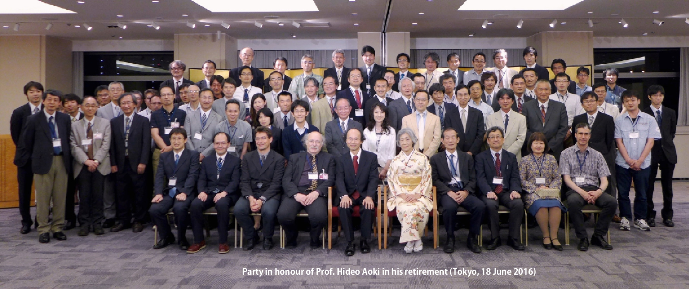

|

|
Iron-based superconductorClick to animate the graphics. |
Outline
Our main interests are many-body and topological effects in electron systems, i.e.,
superconductivity,
magnetism,
topological systems (including graphene)
For these system we explore
materials design for correlated electron systems, and
non-equilibrium phenomena
After my retirement from the University of Tokyo in 2016, I am continuing my research as an emeritus professor of the University of Tokyo, and as a guest researcher in Advanced Industrial Science and Technology (AIST), Tsukuba, Japan.
What's New
- 2024.01.29
-
After 2021, Aoki continues to publish papers, among which are
V. Valmispild, E. Gorelov, M. Eckstein, A. Lichtenstein, H. Aoki, M. Katsnelson, M. Ivanov and O. Smirnova:
Sub-cycle multidimensional spectroscopy of strongly correlated materials,
Nature Photonics (2024) DOI: 10.1038/s41566-023-01371-1;
Sharareh Sayyad, Motoharu Kitatani, Abolhassan Vaezi, and Hideo Aoki:
Nematicity-enhanced superconductivity in systems with a non-Fermi liquid behavior,
Journal of Physics: Condensed Matter 35, 245605 (2023);
Sota Kitamura and Hideo Aoki:
Floquet topological d+id superconductivity induced by chiral many-body interactions;
Communications Physics 5, 174 (2022)
Kazunari Ochi, Hiroyuki Tajima, Kei Iida, and Hideo Aoki:
Resonant pair-exchange scattering and BCS-BEC crossover in a system composed of dispersive and heavy incipient bands: a Feshbach analogy,
Phys. Rev. Research 4, 013032 (2022);
Changming Yue, Hideo Aoki and Philipp Werner:
Superconductivity enhanced by pair fluctuations between wide and narrow bands,
Phys. Rev. B 106, L180506 (2022).
- 2020.10.06
- A long-sought-after non-cuprate high-Tc superconductor was recently been discovered in Stanford in a nickelate, (Nd,Sr)NiO2. Aoki, with Sakakibara et al have examined its superconductivity mechanism, starting from the first-principles electronic strucutre, and revealed that Tc in this material is suppressed due to a strong electron repulsion as compared with the cuprate [H. Sakakibara, H. Usui, K. Suzuki, T. Kotani, H. Aoki, and K. Kuroki: Model construction and a possibility of cuprate-like pairing in a new d9 nickelate superconductor (Nd,Sr)NiO2, Phys. Rev. Lett. 125, 077003 (2020) (Editors' suggestion)].
- 2020.10.06
- A group of Li (Chinese Academy of Sciences), Uchida et al discovered a new superconducting cuprate in Ba2CuO3+δ with Tc≃70 K in 2019. This material has vastly oxygen-vacant CuO planes, dramatically challenging the decades-old wisdom for the cuprates and hence call for a new paradigm. By introducing the Lieb lattice as a candidate structure, we show that the disrupted CuO network can indeed accommodate new pairing mechanisms, where the inter-orbital physics unexpectedly plays a key role and actually enhances superconductivity [K. Yamazaki, M. Ochi, D. Ogura, K. Kuroki, H. Eisaki, S. Uchida, and H. Aoki: Superconducting mechanism for a new-type cuprate Ba2CuO3+δ based on a multiorbital Lieb lattice model, Phys. Rev. Research 2, 033356 (2020)].
- 2020.10.06
- A group of Hafezi (Maryland) et al and Aoki have proposed an optical, in-situ method for controlling topological properties of graphene and related materials. There, spatially-periodic circularly-polarised light is irradiated, with which Chern numbers and Floquet band structures can be tuned [H. Kim, H. Dehghani, H. Aoki, I. Martin, and M. Hafezi: Optical imprinting of superlattices in 2D materials, Phys. Rev. Research 2, 043004 (2020)].
- 2020.01.20
- The "Floquet topological insulator", which was theoretically predicted by Takashi Oka and Hideo Aoki [Phys. Rev. B 79, 081406(R) (2009)] to occur in graphene when illuminated by a circularly-polarised light, is now experimentally detected by James McIver et al of the Max-Planck-Institut Hamburg, and published in Nature Physics 16, 38 (2020), featured on its cover.
- 2020.01.06
- Partially flat band systems are shown to accommodate unconventional superconductivity in peculiar ways by Sharareh Sayyad, Edwin W. Huang, Motoharu Kitatani, Mohammad-Sadegh Vaezi, Zohar Nussinov, Abolhassan Vaezi and Hideo Aoki: Pairing and non-Fermi liquid behavior in partially flat-band systems, as published in Phys. Rev. B 101, 014501 (2020).
- 2018.12.01
- In June and July 2018, Aoki visited the Max-Planck Institute for the Structure and Dynamics of Matter in Hamburg as a guest scientist to have discussions with the group of Professor Andrea Cavalleri. In November 2018 Aoki visited Laboratoire National des Champs Magnétiques Intenses (LNCMI) in Grenoble to have discussions with the group of Dr Marek Potemsky.
- 2018.03.15
- Higgs mode in a high-Tc cuprate with a d-wave pairing is now detected experimentally by Ryo Shimano's group (Univ. of Tokyo), where Aoki and Naoto Tsuji (Riken) have contributed theoretically. The paper is now published in Phys. Rev. Lett. as an editor's suggestion. [Kota Katsumi, Naoto Tsuji, Yuki I. Hamada, Ryusuke Matsunaga, John Schneeloch, Ruidan D. Zhong, Genda D. Gu, Hideo Aoki, Yann Gallais, Ryo Shimano: Higgs mode in the d-wave superconductor Bi2Sr2CaCu2O8+x driven by an intense terahertz pulse, Phys. Rev. Lett. 120, 117001 (2018)]
- 2017.09.15
- Aoki is taking a position of guest professorship at ETH Zurich (Department of Physics) for Sept - Dec 2017. He is giving lectures on "Quantum states of matter" in the graduate course.
- 2016.06.24
-
A party in honour Aoki in his retirement was held
at Tokyo Kaikan (Otemachi) on 18 June 2016.

- 2016.06.22
-
"International Symposium on New Horizons in Condensed Matter Physics"
(Sat 18 - Sun 19 June 2016)
http://fpmrt.riken.jp/public_html/aoki.symposium/index.html
has been held at Koshiba Hall, University of Tokyo (Hongo campus). Invited talks were given by Jun Akimitsu, Hideo Aoki, Ryotaro Arita, F. D. M. Haldane, Koji Hashimoto, Karsten Held, Kazuhiko Kuroki, Peter Maksym, Hiroshi Ooguri, Ryo Shimano, Yoshiro Takahashi and Philipp Werner . - 2016.04.04
-
Prof. Hideo Aoki has retired from the Department of Physics, University
of Tokyo in March 2016. He continues his research with external
funds at
Department of Physics,
University of Tokyo,
Hongo, Tokyo 113-0033, Japan
and at
Electronics and Photonics Research Institute,
Advanced Industrial Science and Technology (AIST),
Umezono 1-1-1, Tsukuba, Ibaraki 305-8568, Japan.

Contact
Hideo Aoki
Professor of Physics
Department of Physics,
Faculty of Science Bldg.1
University of Tokyo
Hongo, Tokyo 113-0033 Japan
Email:
aoki_at_phys.s.u-tokyo.ac.jp